Contents
- EE 779: Assignment 1
- Periodogram method code
- Periodogram method results & analysis
- Welch method code
- Welch method results & analysis
- Blackman Tukey method code
- Blackman Tukey method results & analysis
- Actual PSD code
- Actual PSD and autocorrelation plots
- Comparing different methods
- Different realizations
- Average spectral estimation
EE 779: Assignment 1
Kalpesh Patil 130040019
close all clear all % read input data x = getdata('../assgn1_data/assgn1_data/S01.dat');
Periodogram method code
fft_len = 1024; N = 128; % zero padding signal x_padded = zeros(fft_len,1); x_padded(1:N) = x(1:N); fft_xN = fftshift(fft(x_padded, fft_len)); psd_prdgrm_128 = (abs(fft_xN).^2)/N; fig = figure; freq = linspace(-pi,pi,fft_len); plot(freq,10*log(psd_prdgrm_128)); title('PSD using Periodogram (N = 128)'); xlabel('Normalizaed frequency'); ylabel('PSD in db') saveas(fig,'../results/psd_prdgrm_128.jpg','jpg'); N = 512; % zero padding signal x_padded = zeros(fft_len,1); x_padded(1:N) = x(1:N); fft_xN = fftshift(fft(x(1:N), fft_len)); psd_prdgrm_512 = (abs(fft_xN).^2)/N; fig = figure; freq = linspace(-pi,pi,fft_len); plot(freq,10*log(psd_prdgrm_512)); title('PSD using Periodogram (N = 512)'); xlabel('Normalizaed frequency'); ylabel('PSD in db') saveas(fig,'../results/psd_prdgrm_512.jpg','jpg');
Periodogram method results & analysis
As N is increased the resolution (ability to resolve closely spaced frequency components) is improved. This can be observed in the PSD estimation plots for N = 128 and N = 512. The variance of the periodogram remains constant irrespective of N (was proved in class). For lower value of N, PSD estimate is smoother.
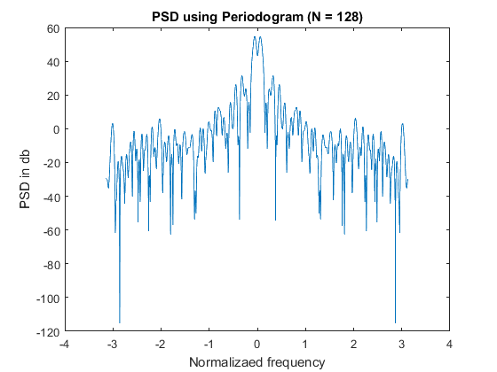 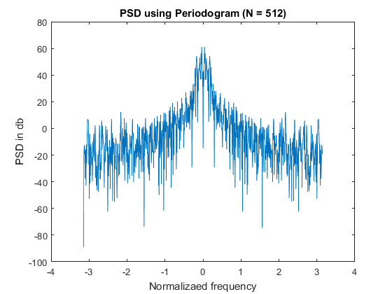Welch method code
fft_len = 1024; N = length(x); L = 32; % overlap D = L/2; w = bartlett(L); sum_psd = zeros(fft_len,1); % finding number of blocks K = floor(N/(L-D))-1; for i = 1:K xw_padded = zeros(fft_len,1); xw_padded(1:L) = x((i-1)*(L-D)+1:(i-1)*(L-D)+L)'.*w(1:L); sum_psd = sum_psd + abs(fftshift(fft(xw_padded, fft_len))).^2; end U = sum(abs(w).^2)/L; psd_welch_32 = sum_psd/(K*L*U); fig = figure; freq = linspace(-pi,pi,fft_len); plot(freq,10*log(psd_welch_32)); title('PSD using Welch (L = 32 , D = 16)'); xlabel('Normalizaed frequency'); ylabel('PSD in db'); saveas(fig,'../results/psd_welch_32.jpg','jpg'); L = 128; % overlap D = L/2; w = bartlett(L); sum_psd = 0; % finding number of blocks K = floor(N/(L-D))-1; for i = 1:K xw_padded = zeros(fft_len,1); xw_padded(1:L) = x((i-1)*(L-D)+1:(i-1)*(L-D)+L)'.*w(1:L); sum_psd = sum_psd + abs(fftshift(fft(xw_padded, fft_len))).^2; end U = sum(abs(w).^2)/L; psd_welch_128 = sum_psd/(K*L*U); fig = figure; freq = linspace(-pi,pi,fft_len); plot(freq,10*log(psd_welch_128)); title('PSD using Welch (L = 128 , D = 64)'); xlabel('Normalizaed frequency'); ylabel('PSD in db') saveas(fig,'../results/psd_welch_128.jpg','jpg');
Welch method results & analysis
As L is increased the resolution (ability to resolve closely spaced frequency components) is improved. This can be observed in the PSD estimation plots for L = 32 and L = 128. As discussed in the class variance is less for higher values of K (lower values of L). The effect can be observed from the corresponding plots as well. Plot for L = 32 is smoother compared that of L=128. This example very well depicts the trade-off between resolution and variance for the same method with different parameters.
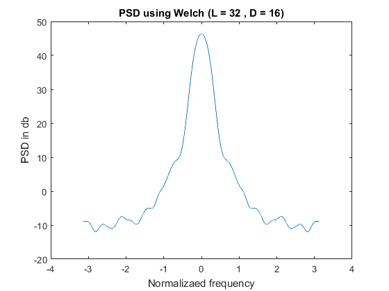 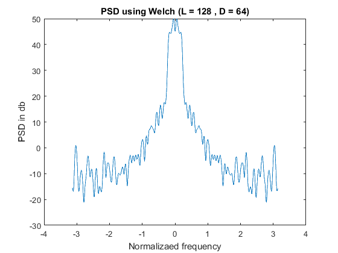Blackman Tukey method code
N = length(x); M = 32; fft_len = 1024; rxw_padded = zeros(fft_len,1); % finding autocorrelation rx = find_correlation(x); w = zeros(length(rx),1); w(N - M : N + M) = bartlett(2*M + 1); % zero padding autocorrelation rxw_padded(1:length(rx)) = rx.*w; psd_bmt_32 = abs(fftshift(fft(rxw_padded,fft_len))); fig = figure; freq = linspace(-pi,pi,fft_len); plot(freq,10*log(psd_bmt_32)); title('PSD using Blackman Tukey (M = 32)'); xlabel('Normalizaed frequency'); ylabel('PSD in db') saveas(fig,'../results/psd_bmt_32.jpg','jpg'); N = length(x); M = 128; fft_len = 1024; rxw_padded = zeros(fft_len,1); % finding autocorrelation rx = find_correlation(x); w = zeros(length(rx),1); w(N - M : N + M) = bartlett(2*M + 1); % zero padding autocorrelation rxw_padded(1:length(rx)) = rx.*w; psd_bmt_128 = abs(fftshift(fft(rxw_padded,fft_len))); fig = figure; freq = linspace(-pi,pi,fft_len); plot(freq,10*log(psd_bmt_128)); title('PSD using Blackman Tukey (M = 128)'); xlabel('Normalizaed frequency'); ylabel('PSD in db') saveas(fig,'../results/psd_bmt_128.jpg','jpg');
Blackman Tukey method results & analysis
As M is increased the resolution (ability to resolve closely spaced frequency components) is improved. This can be observed in the PSD estimation plots for M = 32 and M = 128. As discussed in the class variance is less for higher values of K (lower values of M for the same amount of overlap). The effect can be observed from the corresponding plots as well. Plot for M = 32 is smoother compared that of M=128. This example very well depicts the trade-off between resolution and variance for the same method with different parameters.
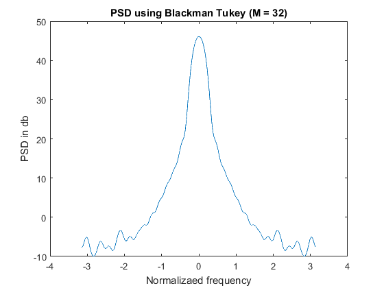 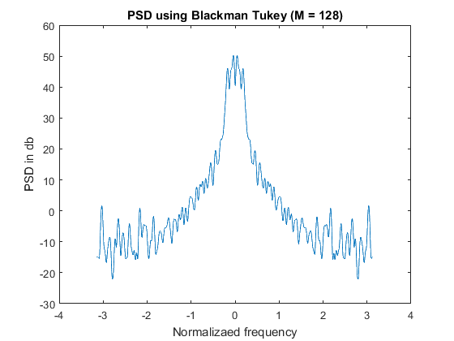Actual PSD code
fft_len = 1024; rx_padded = zeros(fft_len,1); rx_len = fft_len - 1; rx = zeros(rx_len,1); sigma_not = 1; rho = 0.95; const = (sigma_not^2)/(1-rho^2); rho = 0.95; rx(fft_len/2) = (sigma_not^2)/(1-rho^2); % calculating autocorrelation for i = 1:(rx_len + 1)/2 - 1 l = (rx_len + 1)/2 - i; rx(i) = const*rho^l; rx(rx_len - i + 1) = rx(i); end rx_padded(1:rx_len) = rx; psd_actual = abs(fftshift(fft(rx_padded, fft_len))).^2; fig = figure; freq = linspace(-pi,pi,fft_len); plot(freq,10*log(psd_actual)); title('PSD actual (N = 1023)'); xlabel('Normalizaed frequency'); ylabel('PSD in db') saveas(fig,'../results/psd_actual.jpg','jpg'); fig = figure; t = [-(length(rx)-1)/2:(length(rx)-1)/2]; plot(t,rx); title('Autocorrelation function'); xlabel('n (time)'); ylabel('Autocorrelation') saveas(fig,'../results/rx_actual.jpg','jpg');
Actual PSD and autocorrelation plots
Following plots are for the autocorrelation function given in Q2
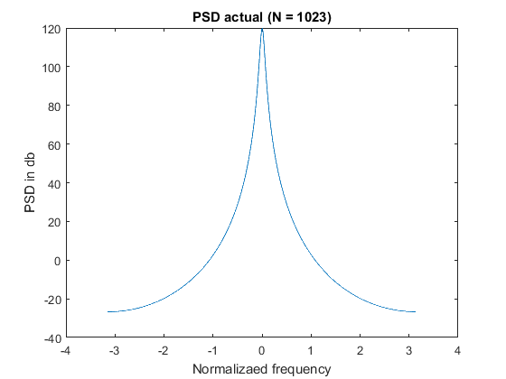 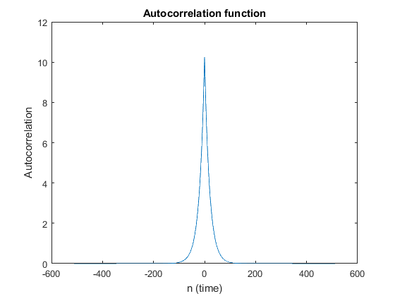Comparing different methods
Different methods of spetral estimation can be compared on the basis of trade-off between variance and resolution. Also changing parameters of the same method changes estimated spectrum (such parameters dependancies are mentioned above in respective sections of those methods). In terms of variance Periodogram method performs worst. More number of blocks used for estimation reduces variance. But more blocks imply shorter blocks and hence resolution will be poorer. In case of Welch method, overlaping allows more number of blocks of given length, hence it outperforms periodogram and normal bartletts (nonoverlapping) methods. Blackman Tukey considers different approach to reduce variance. It reduces variance by smoothening out the variations of the underlined single periodogram. For comparison of different methods resolution*variance can be considered as figure of merit. On an average Blackman Tukey peroforms better than Welch and periodogram. Blackman Tukey > Welch > Periodogram. Overall Blackman Tukey performs the best with low variance and better resolution than other methods.
Different realizations
Different realizations of the same process are demonstrated by implementing difference equation of underlined filter and giving white gaussian noise as an input to it. Let H(z) be the filter. The output of this filter will be ((sigma0^2)*|H(z)|^2)/2. It can be observed that autocorrelation function in the previous question is inverse z transform of the output of this question except for the constant multiplying factor. Spectral estimation of each realization is calculated. Average spectrogram of multiple realizations is also plotted here.
n_realizations = 15; all_psd_prdgrm_128 = zeros(1024,n_realizations); all_psd_prdgrm_512 = zeros(1024,n_realizations); all_psd_welch_32 = zeros(1024,n_realizations); all_psd_welch_128 = zeros(1024,n_realizations); all_psd_bmt_32 = zeros(1024,n_realizations); all_psd_bmt_128 = zeros(1024,n_realizations); fig1 = figure; r = zeros(1023,n_realizations); for iter = 1:n_realizations rho = 0.95; len = 512; power_db = 0; v = wgn(len,1,power_db); y = zeros(len,1); y(1) = v(1); % implimenting difference eqution for the given filter for i = 2:len y(i) = v(i) + rho*y(i-1); end y = y - mean(y); y = y'; r(:,iter) = find_correlation(y); figure(fig1); t = [-(length(r)-1)/2:(length(r)-1)/2]; plot(t,r); title('Different realizations (autocorrelation)'); ylabel('Autocorrelation'); xlabel('n (time)'); hold on; [all_psd_prdgrm_128(:,iter), all_psd_prdgrm_512(:,iter)] = psd_periodogram_method(y); [all_psd_welch_32(:,iter), all_psd_welch_128(:,iter)] = psd_welch_method(y); [all_psd_bmt_32(:,iter), all_psd_bmt_128(:,iter)] = psd_blackman_tukey_method(y); end fig = figure; plot(t,mean(r,2)); title('Average autocorrelation'); ylabel('Average autocorrelation'); xlabel('n (time)'); saveas(fig,'../results/average_autocorrelation.jpg','jpg'); saveas(fig1,'../results/realizations_autocorrelation.jpg','jpg'); %computin average periodogram estimation avg_psd_prdgrm_512 = mean(all_psd_prdgrm_512,2); avg_psd_prdgrm_128 = mean(all_psd_prdgrm_128,2); avg_psd_welch_32 = mean(all_psd_welch_32,2); avg_psd_welch_128 = mean(all_psd_welch_128,2); avg_psd_bmt_32 = mean(all_psd_bmt_32,2); avg_psd_bmt_128 = mean(all_psd_bmt_128,2); avg_psd_prdgrm_512(513) = (avg_psd_prdgrm_512(512)+ avg_psd_prdgrm_512(514))/2;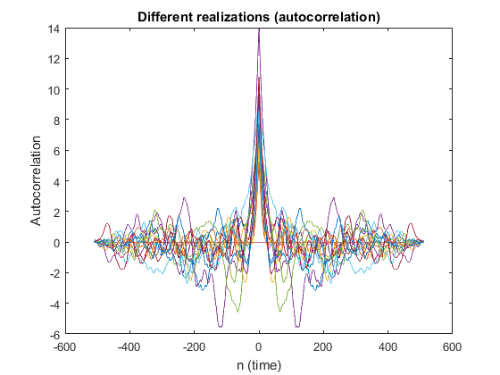 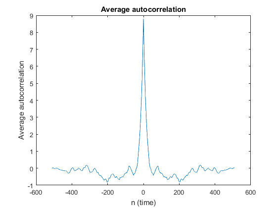
Average spectral estimation
The average of multiple realizations of the same process is taken and plotted here. As expected it is observed that all the plots have become smoother since we have taken average of multiple realizations. Also all the spectra tend towards actual spectrum of the signal as number of realizations over which average has taken is increased
fig = figure; freq = linspace(-pi,pi,fft_len); plot(freq,10*log(avg_psd_prdgrm_128)); title('Average PSD for multiple realizations using Periodogram (N = 128)'); xlabel('Normalizaed frequency'); ylabel('Average PSD in db'); saveas(fig,'../results/avg_psd_prdgrm_128.jpg','jpg'); fig = figure; plot(freq,10*log(avg_psd_prdgrm_512)); title('Average PSD for multiple realizations using Periodogram (N = 512)'); xlabel('Normalizaed frequency'); ylabel('Average PSD in db'); saveas(fig,'../results/avg_psd_prdgrm_512.jpg','jpg'); fig = figure; plot(freq,10*log(avg_psd_welch_32)); title('Average PSD for multiple realizations using Welch (L = 32, D = 16)'); xlabel('Normalizaed frequency'); ylabel('Average PSD in db'); saveas(fig,'../results/avg_psd_welch_32.jpg','jpg'); fig = figure; plot(freq,10*log(avg_psd_welch_128)); title('Average PSD for multiple realizations using Welch (L = 128, D = 64)'); xlabel('Normalizaed frequency'); ylabel('Average PSD in db'); saveas(fig,'../results/avg_psd_welch_128.jpg','jpg'); fig = figure; plot(freq,10*log(avg_psd_bmt_32)); title('Average PSD for multiple realizations using Blackman Tukey (M = 32)'); xlabel('Normalizaed frequency'); ylabel('Average PSD in db'); saveas(fig,'../results/avg_psd_bmt_32.jpg','jpg'); fig = figure; plot(freq,10*log(avg_psd_bmt_128)); title('Average PSD for multiple realizations using Blackman Tukey (M = 128)'); xlabel('Normalizaed frequency'); ylabel('Average PSD in db'); saveas(fig,'../results/avg_psd_bmt_128.jpg','jpg');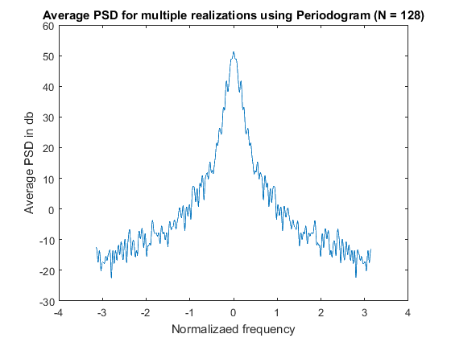 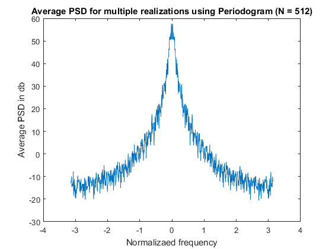 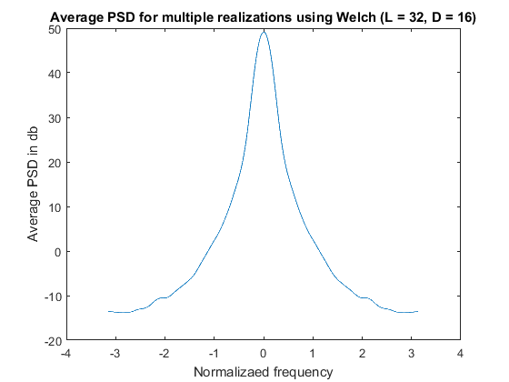 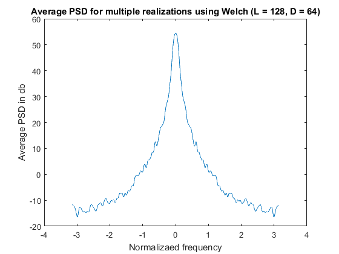 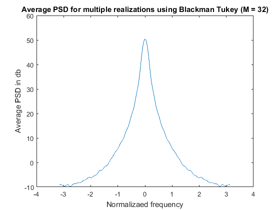 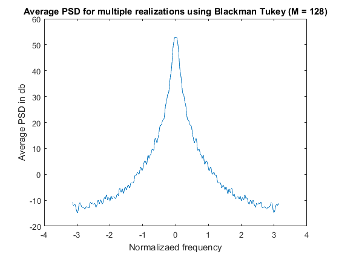